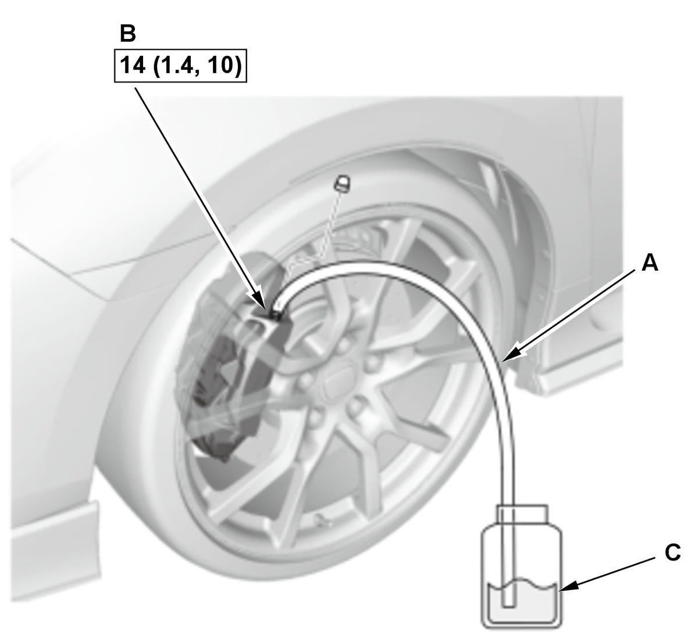
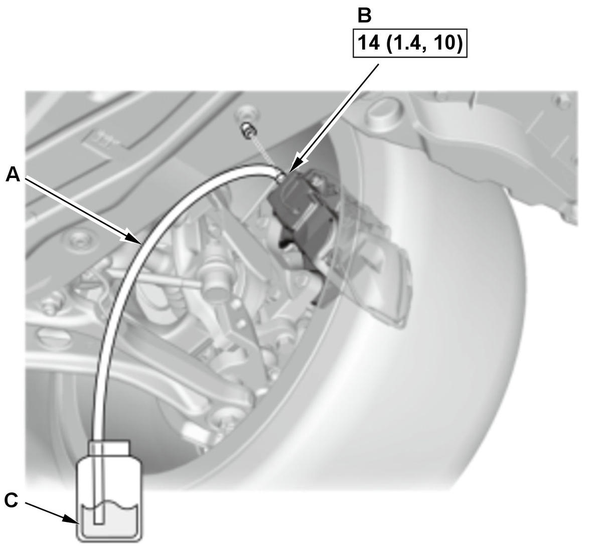
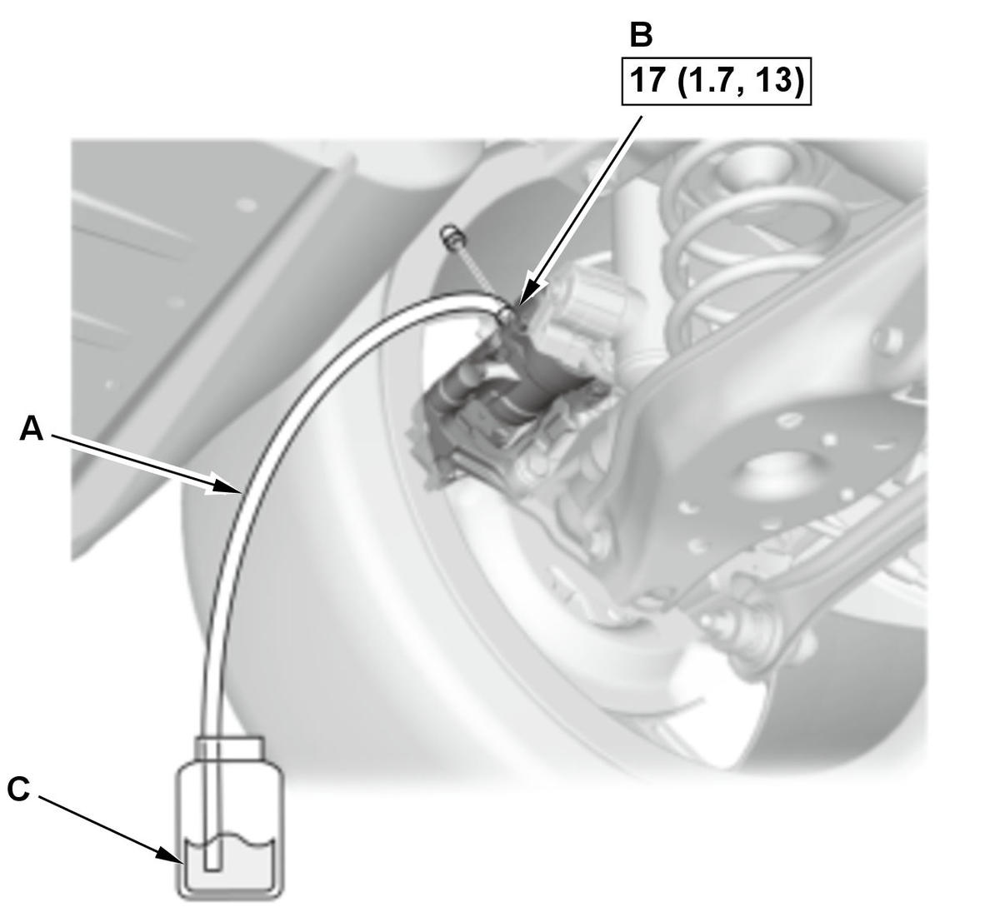

Conventional Brake System Bleeding (Type-R) (2017 2018 2019 2020 2021): Bleeding
NOTICE:
- Review the Service Precautions before doing repairs or service .
- There are three different methods used for bleeding brake systems. The method shown in this procedure is the preferred method for removing the air from the system. For pressure or vacuum bleeding, refer to the tool manufacturer's instructions included with the tool. If you use a commercially available pressure feed bleeder and operate the brake pedal, excessive hydraulic pressure will be applied to the cup inside the master cylinder causing damage. Do not use these methods together.
NOTE:
- How to read the torque specifications .
- The reservoir connected to the master cylinder must be at the MAX (upper) level mark at the start of the bleeding procedure and checked after bleeding each wheel. Add fluid as required.
- Whenever you do any of these actions, or the brake master cylinder reservoir tank is empty, first bleed the brake system using the normal bleed procedure. Then apply and release the parking brake 5 times and bleed the rear brakes again.
-
- Removing the master cylinder.
- Removing the rear brake caliper.
- Removing the rear brake hose or line.
- Removing the VSA modulator-control unit.
- Vehicle - Lift
- Bleed - Precaution
1. Make sure the brake fluid level in reservoir is at the MAX (upper) level line (A). 2. Bleed the brake system in the sequence shown. - Brake System - BleedFig 2: Conventional Brake System Bleeding Components With Torque Specifications (Type-R - Front Outside)

Courtesy of HONDA, U.S.A., INC.Fig 3: Conventional Brake System Bleeding Components With Torque Specifications (Type-R - Front Inside)
Courtesy of HONDA, U.S.A., INC.
Courtesy of HONDA, U.S.A., INC.1. Attach a length of clear drain tube (A) to the bleed screw (B). 2. Submerge the other end of the drain tube into a clear plastic catch bottle of brake fluid (C).
3. Have an assistant slowly pump the brake pedal several times then apply steady continuous pressure.
4. Loosen the bleed screw slowly to bleed the fluid into the plastic catch bottle. The brake pedal will travel toward the floor as the fluid is bled from the system.
5. When the brake pedal reaches the floor, have the assistant hold the pedal in that position, then tighten the bleed screw. The brake pedal can now be released.
6. Check and refill the master cylinder reservoir to the MAX (upper) level line. Be sure to reinstall the master cylinder reservoir cap.
7. Repeat steps 3 thru 6 until the brake fluid in the clear drain tube appears fresh and there are no air bubbles in the fluid.
8. Repeat this procedure for each brake in the bleeding sequence.
- Brake System - Bleed (Inside of Rear Brake Caliper)
1. Apply and release the parking brake 5 times, then bleed the rear brakes again.
NOTE: When bleeding the brake system, air can get trapped inside the rear calipers. This is due to the complex fluid path inside electric parking brake calipers. Therefore this procedure is necessary.